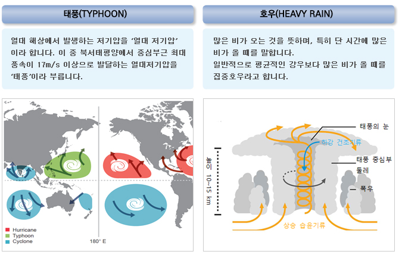

태풍·호우란?

태풍은 열대 해상의 대류구름들이 모여 하나의 중심을 갖는 강력한 저기압으로 발달한 것으로서 매우 강한 비와 바람을 동반합니다.
태풍이 우리나라로 북상할 경우 고위도의 찬 공기와 부딪쳐 비와 바람의 분포가 불규칙적이고 국지적인 강풍과 호우로 나타나는 경우가 많습니다.
태풍·호우, 왜 주의해야 할까요?
태풍·호우 피해
- ‘06~’16년 동안 태풍·호우로 인하여 평균 10건의 재해 발생과 21.6명의 인명피해 및 4,831억원의 재산피해가 발생하였습니다.
- 태풍·호우는 하천범람, 산사태, 해일 등으로 이어져 재산피해는 물론 인명피해를 유발하기 때문에 각별한 주의와 사전 대비가 필요합니다.
태풍·호우, 어떻게 대처해야 할까요?
태풍은 집중호우와 강한바람, 폭풍우를 동반하기 때문에 하천범람, 산사태, 해일, 비산물 낙하 등의 피해가 발생될 수 있습니다. 태풍이 예보된 때에는 아래와 같이 준비하시기 바랍니다.
평상시 재난대비
내 지역의 정보는 미리미리 확인합니다.
- 내가 거주하거나 생활하는 지역의 홍수, 태풍, 침수(저지대), 산사태, 해일 등 재해위험요소를 사전에 확인합니다.
재난에 대한 위험정보를 수신할 수 있도록 준비합니다.
- 태풍, 집중호우 등 기상특보나 홍수, 산사태 등 재난 예·경보를 수신할 수 있도록 TV, 라디오 청취 가능하도록 하고 스마트폰 앱(안전디딤돌) 등을 미리 설치합니다.
가족과 사전에 비상에 대비한 약속을 정합니다.
- 비상시를 대비하여 지역에 대피할 장소(국민재난안전포털, www.safekorea.go.kr나 지자체 홈페이지의 임시대피소, 이재민임시주거시설 등 참고)와 안전한 이동 방법에 대해 숙지하고, 어린이들에게 알려 주어야 합니다.
- 가족이 각각 이동할 때를 대비하여 다시 만날 장소를 사전에 정합니다.
비상시 안전한 이동방법, 대피요령 등을 숙지해 둡시다.
- 비상상황이 예견될 때에는 가족과 즉시 연락해서 함께 안전한 곳으로 이동할 수 있도록 하고, 상황이 급박할 경우에는 즉시 그 자리를 피하고 가족과는 따로 연락해서 자신의 이동경로를 알려주도록 합니다.
- 피난길에는 하천변, 산길 등 위험한 지름길은 피하고, 도로나 교량이 휩쓸려간 길은 지나지 않도록 합니다.
- 이동 길에 전신주나 변압기 등의 주변은 피하도록 합니다.
재난이 발생할 경우를 대비하여 비상용품을 사전에 준비합니다.
- 응급약품, 손전등, 식수, 비상식량, 라디오, 핸드폰 충전기, 휴대용 버너, 담요 등 비상용품을 사전에 한 곳에 구비해 두고 응급한 상황이 발생하면 바로 휴대할 수 있도록 준비합니다.
- 차량이 있는 경우에는 차량의 연료를 미리 채워 둡니다. 차량이 없을 경우 차량이 있는 가까운 지인과 사전에 같이 이동할 수 있도록 약속해 둡니다.
재난에 대비한 지속적인 관심과 정비를 합니다.
- 비상용품의 유효기간을 지속적으로 확인하여 교체하고, 대피장소, 이동경로 등에 대해서는 지속적으로 관심을 가지고 정비합니다.
태풍·호우 예보시
TV, 라디오, 인터넷 등에서 태풍·호우가 예보된 때에는 사전에 거주 지역에 영향을 주는 시기를 파악하고, 태풍·호우가 발생되기 전에 피해를 예방을 위한 조치를 하시기 바랍니다.
나와 가족, 지인들의 안전을 위해 외출을 자제하고 지속 정보를 청취합니다.
- 태풍·호우 시에는 외출을 자제하고, TV, 라디오 등을 통해 기상정보를 청취하여 내가 있는 지역의 상황을 지속 관찰합니다.
- 외부에 있는 가족, 지인과 연락하여 안전확인과 위험정보 등을 공유합니다.
- 차량으로 이동 중에는 속도를 줄여서 운전하고, 개울가, 하천변, 해안가, 지하차도 등 급류에 휩쓸릴 수 있거나 침수위험지역은 접근하지 않습니다.
건물, 집안 등 실내에서의 안전수칙을 숙지합니다.
- 건물의 출입문, 창문은 닫아서 파손되지 않도록 하고, 실내에서는 창문이나 유리문에서 되도록 떨어져 있도록 합니다.
- 침수의 위험이 없는 지역에서는 바람으로 인해 피해를 입지 않도록 가급적 욕실과 같이 창문이 없는 방이나 집안의 제일 안쪽으로 이동합니다.
- 가스 누출로 2차 피해가 발생할 수 있으므로 사전에 차단하고, 감전의 위험이 있으므로 집 안팎의 전기시설은 만지지 않습니다.
- 정전 시에는 양초를 사용하지 말고 휴대용 랜턴을 사용합니다.
해안 지역에서는 해수욕장 이용을 중단하고, 가급적 해안도로 운전을 자제하세요.
- 태풍·호우 특보가 발효된 지역의 해안가, 상습침수지역, 산간·계곡 등 위험지역에 있거나 대피권고를 받을 경우 즉시 안전한 지역으로 대피합니다.
- 공사장, 가로등, 신호등, 전신주, 지하공간 등 위험지역에는 접근하지 않습니다.
- 태풍·호우 시에는 개울, 하천변, 해안가에 접근하지 말고, 농촌지역에서도 논둑이나 물꼬를 보러 나가지 않습니다.
- 이동식 가옥이나 가시설, 지하실 등에 거주할 경우에는 단단한 건물로 즉시 이동합니다.
- 선박은 사전에 항구에 결박하고, 운행 중인 경우 태풍의 이동경로에서 최대한 멀리 대피합니다.
태풍·호우 이후
태풍·호우가 지나간 후에는 주변의 피해요소를 확인하고, 가까운 동사무소 등에 피해를 신고하여 보수·보강을 하도록 합니다.
가족 지인의 안전 여부를 확인합니다.
- 가족 및 지인과 연락하여 안전여부를 확인하고, 연락이 되지 않고 실종이 의심되는 경우에는 가까운 경찰서에 신고합니다.
태풍, 호우로 인한 피해여부를 확인합니다.
- 대피 후 집으로 돌아온 경우에는 노후주택 등은 안전에 위험이 있을 수 있으므로, 출입하기 전에 반드시 피해여부를 확인합니다.
- 파손된 시설물(주택, 상하수도, 축대, 도로 등)이 있을 경우에는 가까운 동사무소나 시·군·구청에 신고합니다.
- 파손된 사유시설을 보수·복구할 때는 반드시 사진을 찍어 둡니다.
- 침수된 도로, 교량, 보도 등은 파손되었을 수 있으므로 건너지 않습니다.
- 하천 등 제방은 무너질 수 있으니 가까이 가지 않습니다.
- 고립된 지역에 있을 경우에는 물가 등을 건너지 말고, 119 또는 112 등에 신고하거나 주변에 도움을 요청합니다.
태풍, 호우로 인한 2차 피해를 방지합니다.
- 물이 빠져나가고 있을 때에는 기름이나 동물사체 등 오염된 경우가 많으므로 물에서 멀리 떨어집니다.
- 수돗물이나 저장 식수는 오염여부를 확인 후에 사용합니다.
- 침수된 음식이나 재료는 식중독의 위험이 있으므로 사용하지 않습니다.
- 침수된 주택은 가스, 전기차단기가 내려가 있는지 확인하고, 한국가스안전공사 ·한국전기안전공사(1588-7500) 또는 전문가의 안전점검 후에 사용합니다.
- 태풍·호우 피해로 가스가 누출될 수 있으므로 창문을 열어 충분히 환기하고, 성냥불이나 라이터는 환기 전까지 사용하지 않습니다.
- 쓰러진 농작물을 일으켜 세우고, 침수된 논·밭은 배수 시 작물에 묻은 흙앙금·오물 등을 깨끗한 물로 제거하고 병해충을 긴급 방제합니다.
태풍·호우 관련 상식
기상특보 기준
| 종류 | 주의보 | 경보 |
|---|---|---|
| 태풍 | 태풍으로 인하여 강풍, 풍랑, 호우, 폭풍해일 현상 등이 주의보 기준에 도달할 것으로 예상될 때 |
태풍으로 인하여 다음 중 어느 하나에 해당하는 경우
|
| 호우 | 6시간 강우량이 70mm이상 예상되거나 12시간 강우량이 110 mm 이상 예상될 때 | 6시간 강우량이 110 mm 이상 예상되거나 12시간 강우량이 180 mm 이상 예상될 때 |
| 강풍 | 육상에서 풍속 14m/s이상 또는 순간풍속 20m/s이상이 예상될 때. 다만, 산지는 풍속 17m/s 이상 또는 순간풍속 25m/s이상이 예상될 때 | 육상에서 풍속 21m/s이상 또는 순간풍속 26m/s이상이 예상될 때. 다만, 산지는 풍속 24m/s 이상 또는 순간풍속 30m/s이상이 예상될 때 |
| 풍랑 | 해상에서 풍속 14m/s이상이 3시간 이상 지속되거나 유의파고 3m 이상이 예상될 때 | 해상에서 풍속 21m/s 이상이 3시간 이상 지속되거나 유의파고가 5m 이상이 예상될 때 |
| 폭풍해일 | 천문조, 폭풍, 저기압 등의 복합적인 영향으로 해수면이 상승하여 발효기준 값 이상이 예상될 때. 다만, 발효기준 값은 지역별로 별도 지정 | 천문조, 폭풍, 저기압 등의 복합적인 영향으로 해수면이 상승하여 발효기준 값 이상이 예상될 때. 다만, 발효기준 값은 지역별로 별도 지정 |
태풍강도·크기
| 크기 | 풍속 15㎧ 이상의 반경 | 강도 | 최대풍속 |
|---|---|---|---|
| 소형 | 300㎞ 미만 | 약 | 17㎧(34kts)이상∼25㎧(48kts)미만 |
| 중형 | 300㎞이상∼500㎞미만 | 중 | 25㎧(48kts)이상∼33㎧(64kts)미만 |
| 대형 | 500㎞이상∼800㎞미만 | 강 | 3㎧(64kts)이상∼44㎧(85kts)미만 |
| 초대형 | 800㎞이상 | 매우강 | 44㎧(85kts)이상 |
연락처/홈페이지
위기상황, 긴급상황 시 신고전화
- 재난신고 119, 범죄신고 112, 민원 상담 110
행정안전부 국민행동요령, 임시주거시설 등 안내
- 행정안전부 홈페이지 http://www.mpss.go.kr
- 행정안전부 국민재난안전포털 http://www.safekorea.go.kr
- 스마트폰 어플리케이션 ‘안전디딤돌 앱’
기상청 기상 및 기상특보 정보
- 기상청 02-2181-0501, http://www.kma.go.kr
- 담당부서 : 재난안전건설본부 재난대응과
- 연락처 : 055-211-2811
최종수정일 : 2018-04-11
이 페이지에서 제공하는 정보에 대하여 만족하십니까?